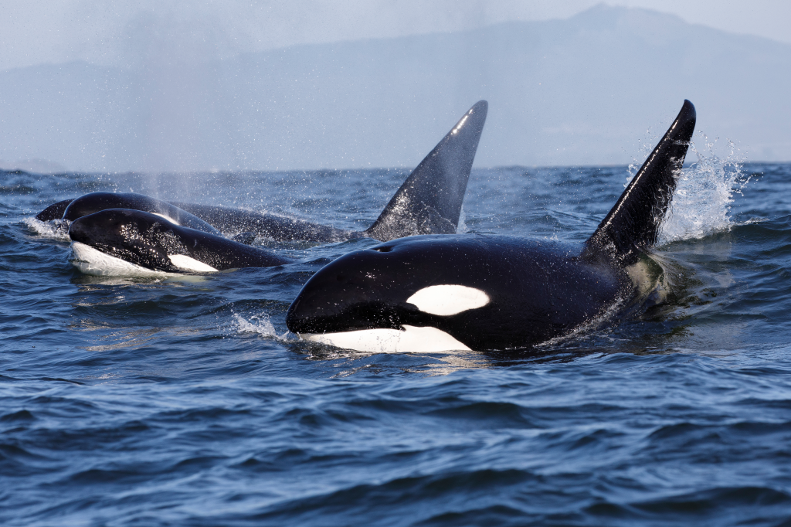

Solutions
Here's how we're protecting orcas from danger
Minimization of human disturbance
- Regular atividades humanas que possam perturbar as orcas, como o tráfego de embarcações e o turismo desregulado, é fundamental. Estabelecer diretrizes para a observação responsável de orcas e manter distâncias seguras ajuda a minimizar o estresse e o impacto negativo
- Implementing sustainable fisheries regulations that prevent overfishing of killer whale prey species is critical. This helps ensure there is enough food available for the orcas and balances marine ecosystems.

7 to 10
meters long is the average size of a male orca
56km/h
maximum speed an orca can reach
227
kilograms of food consumed per day
30 to 80
years average life expectancy
Join our community
Get the latest conservation updates, be inspired to take action, and learn about ways to get involved